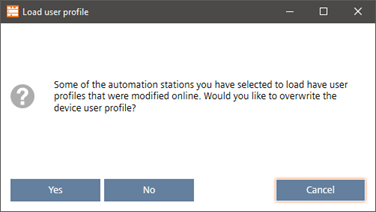

更新工程设备的用户配置文件
使用此过程将访问控制配置文件（用户配置文件）加载到目标设备中。用户个人资料受Password policyfor ABT Site.
Password policy
User profiles
Update a user profile
- All selected devices must be in a configured state.
- Open the Startup > Configure and download task.
- Select the Engineered devices tab.
- Right-click the selected devices and select Load > User profile only.
- The project user profiles are loaded to the selected device. ABT Site checks for user profiles that might have been added or changed online on the device. If there are such changes, a message displays.

- Click Yes, if you want to overwrite the changed user profiles of the selected devices.
- Click No, if you want to keep the changed user profiles on the devices. Other selected devices, which do not have any user profiles online changed, will be loaded with the project user profiles.
- Click Cancel to cancel the operation. The device user profiles are not changed.
- The user profiles are updated.

此任务支持质量负载。它不允许在房间单元上加载固件和应用程序类型。执行检查以确保所有选定的设备属于同一类型并确定文件兼容性。设备执行设备实例数据的备份（根据需要）并在更新后恢复，但应用程序类型除外（用户必须重新加载配置）。